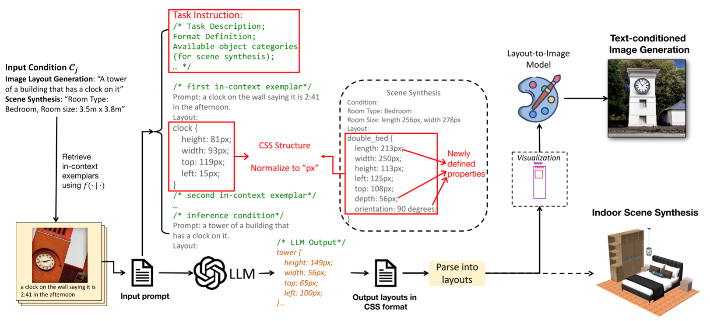
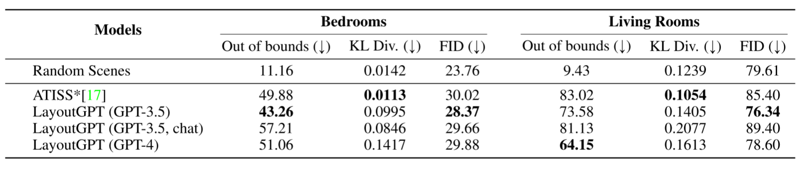

LayoutGPT: Compositional Visual Planning and Generation with Large Language Models
Introduction
在视觉生成中达到高度的用户可控性通常需要复杂、细粒度的输入，如布局。然而，与简单的文本输入相比，这类输入给用户带来了很大的负担。笔者提出通过LLM来生成布局，即LayoutGPT。
- LayoutGPT can convert challenging textual concepts to 2D layouts and generate free-form, detailed descriptions for each region. In contrast, existing methods are restricted to class labels and fail to reason over numerical and spatial concepts in text conditions.
Method

LayoutGPT Prompt Construction
- CSS Structures. 图像布局与CSS格式化网页布局、定义HTML中img标记的各种属性的方式非常相似，所以在属性值映射时采用CSS样式的声明方法。
- Task Instructions.笔者将任务指令前置到提示符中，以指定任务目标，定义标准格式，值的单位等。
- Normalization，由于CSS的常见长度单位是像素（px），他们基于固定标量规范化每个属性值，并将值重新缩放到最大256px。
Experiment Setup
Datasets & Benchmarks: we propose NSR-1K, a benchmark that includes template-based and human-written (natural) prompts from MSCOCO.
Evaluation Metrics: precision, recall, and accuracy
Baselines :As we consider both layout evaluation and image evaluation, we compare LayoutGPT with end-to-end T2I models (Stable Diffusion, Attend-and-Excite) and two-stage systems that generate layouts first and then apply GLIGEN as the layout-to-image model. 还会和人工画的布局对比。

图片中参数的含义：
- Numerical Reasoning（数值推理）：
- Precision（精度）：计算预测的对象中实际存在于真实情况中的百分比。
- Recall（召回率）：真实的对象被预测到的百分比。
- Accuracy（准确性）：基于生成的边界框计数和空间位置
- Acc. (GLIP)：使用 GLIP 检测结果计算的平均准确性，基于生成图像的边界框计数或空间关系。
- CLIP Sim.：文本提示和生成图像之间的 CLIP 余弦相似度，用于参考。
- Spatial Reasoning（空间推理）：
- Accuracy（准确性）：根据 LLM 生成的布局和 GLIP 布局，评估预测布局中空间关系的准确性，计算具有正确空间关系的预测布局的百分比。
- Acc. (GLIP)：与数值推理中含义相同，基于 GLIP 的检测结果计算准确性。
- CLIP Sim.：与数值推理中含义相同，文本提示和生成图像的 CLIP 余弦相似度。
Evaluation Results
- GPT-3.5 achieves the best performance in numerical reasoning while GPT-4 performs the best in generating correct spatial positions.
- The discrepancy between layout accuracy and GLIP-based accuracy suggests that the bottleneck mainly stems from layout-guided image generation and GLIP grounding results.
- The discrepancy between layout accuracy and GLIP-based accuracy suggests that the bottleneck mainly stems from layout-guided image generation and GLIP grounding results.
- LayoutGPT can understand visual commonsense.
Application Scenarios
- Dense Layout Planning: Though only a few objects are mentioned in the prompts, LayoutGPT predicts layouts for the whole scene and imagines common objects that are usually visible in each scene.
- Text-based Inpainting: LayoutGPT can enrich the description of each object with details that are not mentioned in the prompt.
- Counterfactual Scenarios: LayoutGPT manages to generate reasonable layouts on these challenging prompts and handles the relationship between objects well.
Indoor Scene Synthesis

While living rooms are challenging for both methods, LayoutGPT shows more significant improvement over ATISS as supervised methods tend to overfit in early epochs.